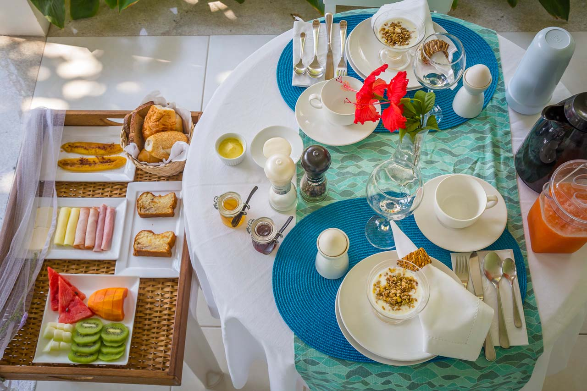
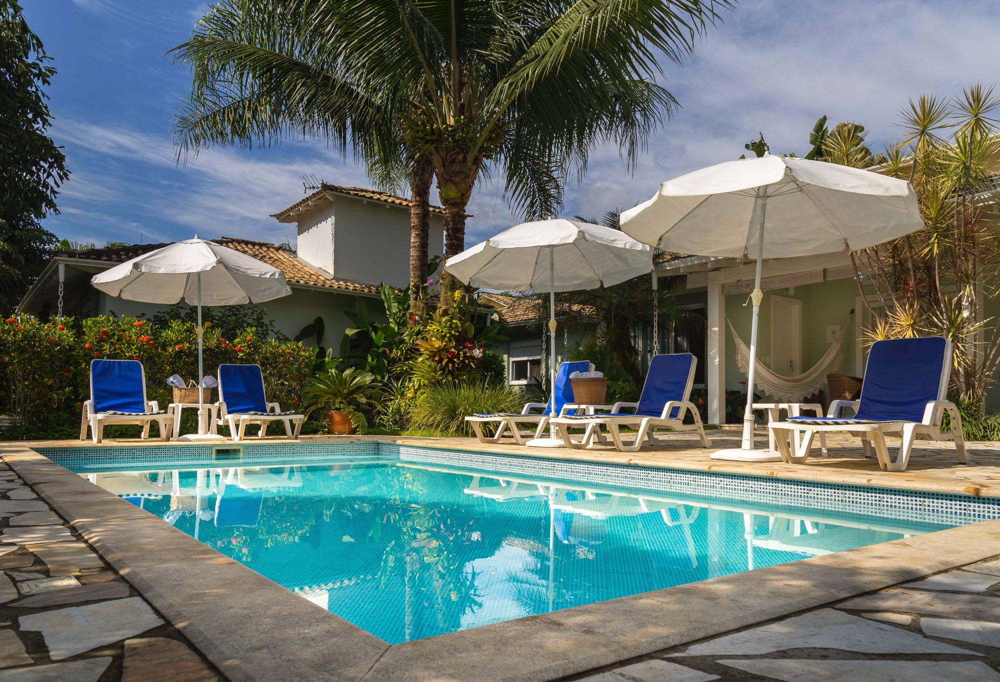
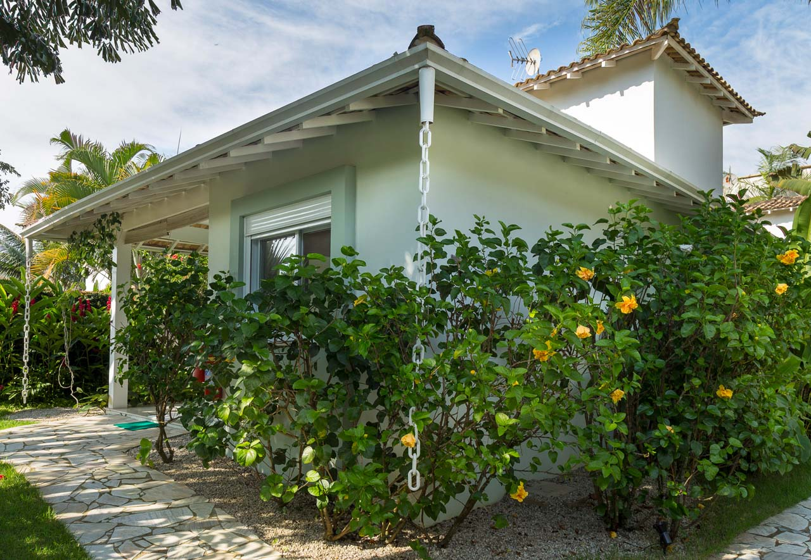

Única preocupação é você relaxar.
Café da manhã

Em nosso café da manhã servido diariamente, de 8h as 10h30, nossos hóspedes podem desfrutar de uma variedade de pães e de bolos.
Piscina

Da piscina você pode ouvir o barulho do riacho que passa ao lado da pousada e o som dos pássaros cantando. Piscinas com aquecedores e espasoças.
Bangalo

Rústica e aconchegante. Em total harmonia com a natureza, em um cenário paradisíaco, proporcionamos toda comodidade, estrutura e serviços de um hotel.